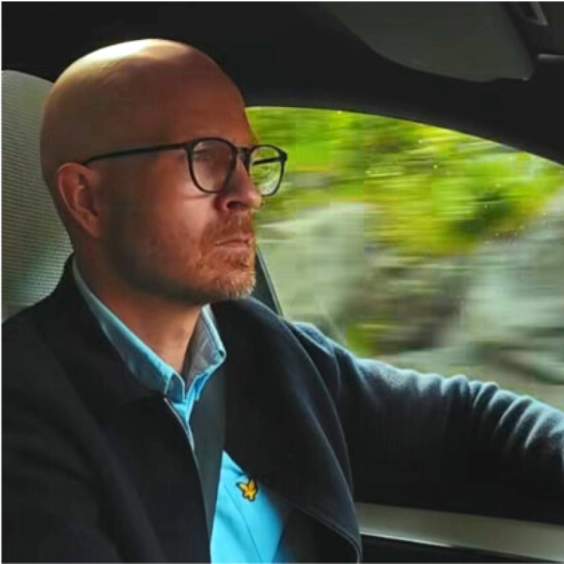

October 2024–Present
Principal Product Leader - Beyond Car Products
Leading products in Volvo’s Car Ownership and ecosystem space.
01 / Introduction
Principal Product Leader @ Volvo Cars
Lund, Skåne län, Sweden

“I love creating great products and services, together with amazing people!”
From my LinkedIn profile
02 / About
Currently Principal Product Leader in Volvo’s Car Ownership and ecosystem space: a portfolio of digital products and services that elevate mobility and car ownership experiences.
Two decades of B2C and B2B product development at companies including Sony, Ericsson, Microsoft and Volvo Cars.
15+ years in people and organizational leadership roles, with strategic influence and a track record of business impact.
03 / Experience
Roles and dates from my LinkedIn profile. Some appointments overlap.
October 2018–Present
October 2024–Present
Leading products in Volvo’s Car Ownership and ecosystem space.
January 2023–October 2024
Led the creation of Volvo Insurance 2.0, Volvo’s direct-to-consumer digital insurance product, to simplify car ownership and make drivers safer.
March 2023–July 2023
Interim leader for the Add-Ons product cluster, incubating experiences and business models based on software and service sales and subscriptions.
April 2022–January 2023
Interim Head of Product in the mobile experience cluster. The profile records an improvement in the Volvo Cars app’s App Store rating from 1.8 to 4.4.
April 2021–January 2023
Led and scaled the engineering teams responsible for Volvo Cars’ mobile app and services, introducing CI/CD, platform teams and value steering through OKRs.
October 2020–August 2021
Established the organization responsible for customer relationship data and its use across Volvo, including insourcing Volvo ID to enable direct digital relationships.
October 2018–October 2020
Product management for connected active safety and autonomous drive. Drove research and development initiatives, international research collaborations and a technology joint venture.
January 2018–January 2019
January 2018–January 2019
Headed the Product and Program Management team in Lund, planning and delivering Microsoft Photo experiences: browsing, viewing, editing, inking, search, albums and discovery for millions of monthly users.
February 2004–January 2018
January 2016–January 2018
Headed the UX team in Research and Incubation, driving innovative business ideas through concept development and incubation.
August 2012–December 2015
Managed around 15 experience planners, defining the user experience vision and strategy for Sony smartphones, guiding software delivery and working directly with customers.
February 2011–August 2012
Product and experience planning in the Sony User Experience Center, responsible for core apps and experiences in Sony Mobile smartphones.
January 2010–February 2011
Managed an Android software user interface development section of around 15 people.
January 2009–December 2009
Managed two software core application development sections of around 25 people, covering entertainment, multimedia and system apps for the OSE platform.
February 2005–December 2008
Project management and strategy in mobile graphics technologies, including requirements coordination, roadmaps and leading a team of six project managers.
February 2004–April 2005
Developer and module architect for Java 3D graphics and a game engine, focused on integration, optimization, hardware acceleration and 2D/3D user interfaces.
04 / Education
1999–2004
MSc, Computer Science
2017
Certified Service Design Thinker
User-centric service design, user experience, service creation and planning.
2017
Innovation Leadership
Management, organization and innovation.
05 / Connect
For further professional background, visit my LinkedIn profile.